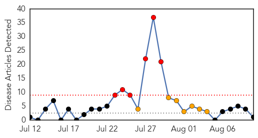
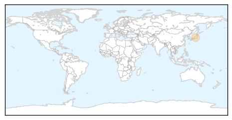
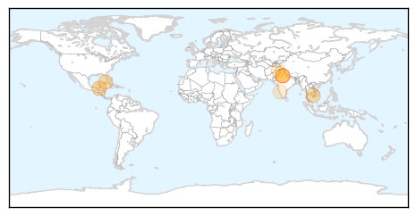

Hepatitis
30-Day Web Trend
6 alerts, 7 warnings

30-Day Twitter Trend
1 alerts, 0 warnings

Article Locations
Article Confidences

Top Articles:
Top Tweets:
-
No tweets found for Aug 10, 2015
Dengue Fever
30-Day Web Trend
0 alerts, 0 warnings

30-Day Twitter Trend
0 alerts, 0 warnings

Article Locations
Article Confidences

Top Articles:
- 0.997
- Dengue Outbreak Hits 261 People in Belize, No Deaths Recorded
- 0.989
- After Two-year Lull, Dengue Fever Bites
- 0.931
- Pope set to arrive as Cuba copes with Dengue Fever
- 0.914
- No need for worry on Dengue: Minister
- 0.914
- Three-year-old dies of dengue, cases cross 100 mark
- 0.773
- First official dengue death in the national capital; 125 % rise in cases in one week
- 0.763
- 1st official dengue death in city; 125 % rise in cases in 1 wk
- 0.641
- CDA chief wants anti-dengue drive to pick up steam
- 0.603
- Maharashtras Chief Minister Plans To Improve States Healthcare With Temple Funds
Top Tweets:
-
No tweets found for Aug 10, 2015